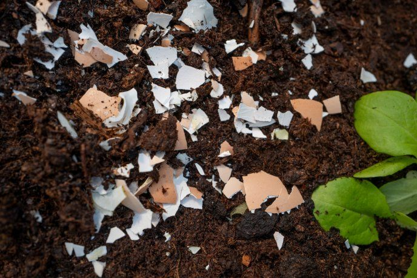
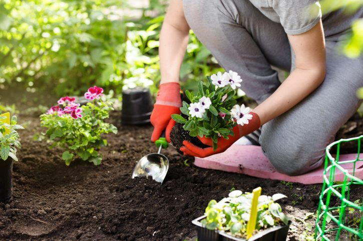
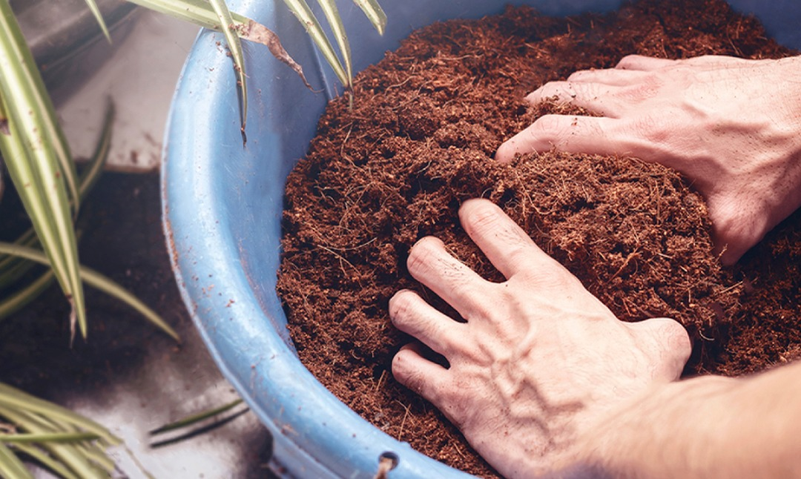

Jardineria con la abuela

Fertilizante casero
Materiales:
- 5 cáscaras de huevo.
- 2 cáscaras de plátano.
- 1 litro de agua.
Pasos:
- Tritura las cáscaras de huevo y plátano en trozos pequeños.
- Hierve las cáscaras en el litro de agua durante 10 minutos.
- Deja enfriar, cuela y utiliza el agua como fertilizante para tus plantas.
- Aplica una vez por semana para mejorar el crecimiento.
¡Plantas felices!

Controla plagas
Materiales:
- 3 dientes de ajo.
- 1 litro de agua.
- 1 cucharadita de jabón líquido biodegradable.
Pasos:
- Tritura los dientes de ajo y mézclalos con agua.
- Deja reposar la mezcla durante 24 horas.
- Cuela la solución y añade el jabón líquido.
- Rocía sobre las plantas afectadas para alejar insectos dañinos.
¡Plantas lindas!

Mejora la retención de agua
Materiales:
- Cáscaras de coco.
- Tierra para macetas.
Pasos:
- Tritura las cáscaras de coco.
- Mezcla la fibra con la tierra de tus macetas o jardín.
- Esto ayudará a retener la humedad y mejorar el drenaje del suelo.
¡Bello!

Atrae polinizadores
Materiales:
- Semillas de flores como lavanda, girasol, margaritas o caléndulas.
- Tierra para macetas.
Pasos:
- Planta flores coloridas y fragantes en áreas soleadas de tu jardín.
- Riega regularmente para mantenerlas saludables.
- Estas plantas atraerán abejas y mariposas, que mejoran la polinización de tu jardín.
¡Jardin soñado!

Revitaliza las hojas
Materiales:
- Agua de enjuagar arroz.
Pasos:
- Guarda el agua que usas para enjuagar el arroz.
- Deja que repose hasta alcanzar temperatura ambiente.
- Riega tus plantas con esta agua 1-2 veces por semana para estimular su crecimiento.
¡Hojas sanas!